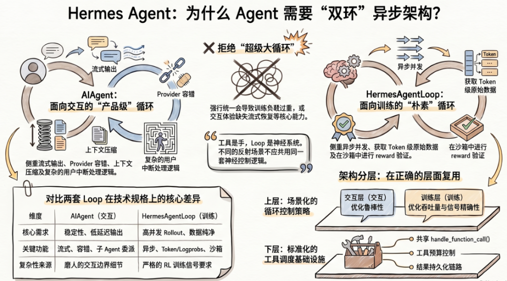
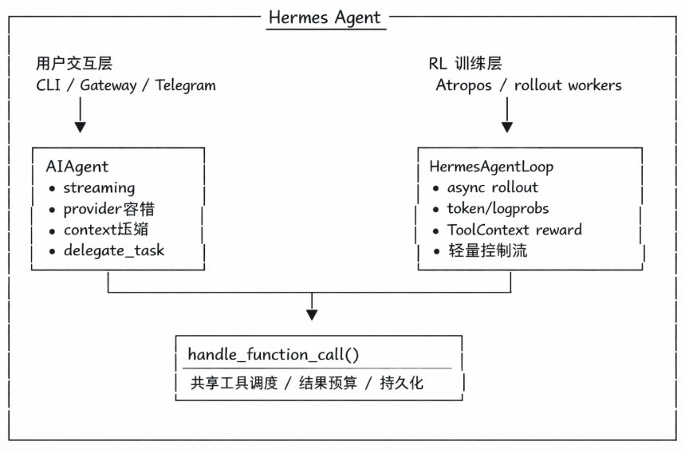
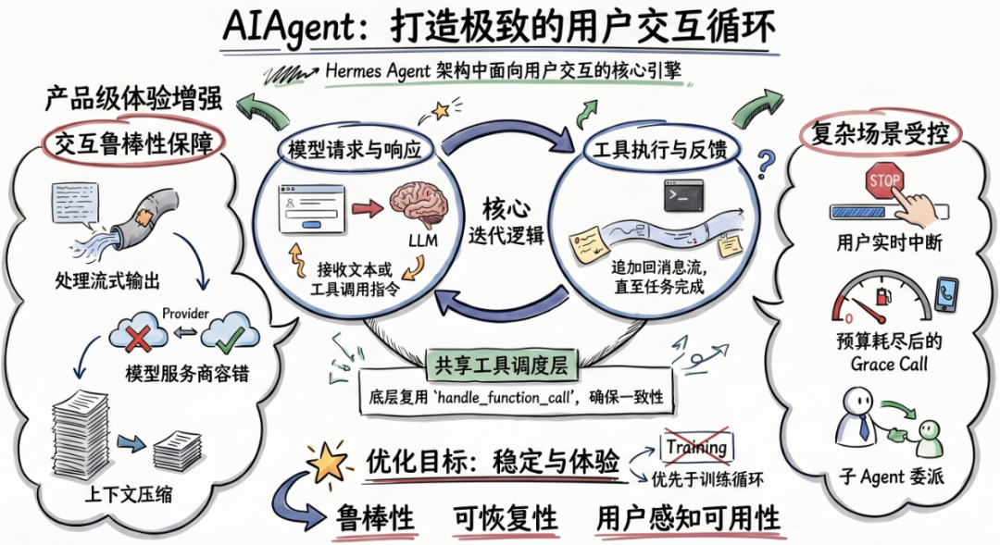
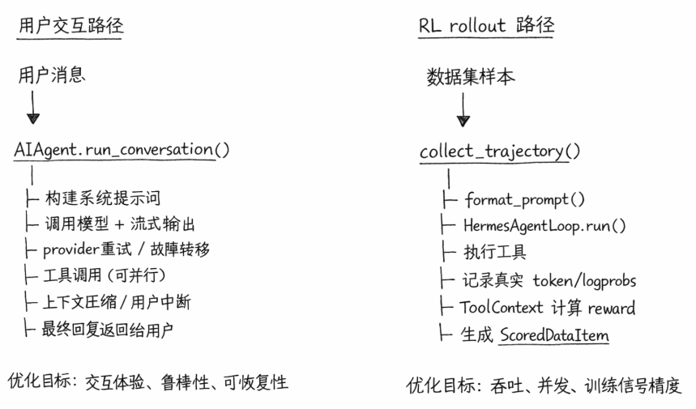

Hermes Agent 源码中有个地方很难忽略：源码中同时存在两套 Agent Loop。
一是 run_agent.py 的 AIAgent 。
一是 agent_loop.py的 HermesAgentLoop。前者代码体量很大，后者明显轻得多。

深入分析源码就会发现两套 Loop 确实都在做“模型调工具再继续推理”这件事，但服务的运行场景完全不同，控制逻辑也不是一个量级。
先介绍 Agent Loop ，Hermes 里的 Loop，核心就是下面这四步：
1. 把当前消息发给 LLM
2. LLM 返回文本和可选的 tool calls
3. 如果有工具调用，就执行工具并把结果追加回消息列表
4. 如果没有工具调用，就认为任务完成，退出循环
这四步是Agent Loop的基本流程，但这四步之外还包很多逻辑。用户交互要处理流式输出、重试、打断、上下文压缩；训练 rollout 则关心 async、token/logprobs、reward 计算和并发调度。Hermes 没把这些需求硬塞进同一个大循环里，而是直接拆成了两套实现Agent Loop：
1. 面向用户实时交互的 `AIAgent`
2. 面向 RL rollout 的 `HermesAgentLoop`
拆分不是为了拆分而拆分，根本是因为两个场景本来就不是同一个问题。

1 用于用户交互，用于RL训练
AIAgent 对应的是 CLI、Gateway、Telegram、Discord 这类直接面向人的入口。用户在前台等回复，这条链路不是只追求“能跑通”，还需要把交互过程本身兜住。源码里能直接看到这类需求留下来的痕迹：流式输出、Provider 容错、上下文压缩、用户中断、预算耗尽后的 Grace Call、子 Agent 委派、插件钩子，基本都堆在这条路径上。

HermesAgentLoop 而完全是另一回事。它不面向用户，而是被 Atropos 调起来做 rollout。这里没有人盯着屏幕，也不需要跨 Provider 兜底。训练场景真正看重的是另外几件事：
必须是 async，才能并发跑大量 rollout
必须拿到真实 token、logprobs、masks，供 GRPO 训练使用
必须把工具执行和 reward 验证放在同一个 sandbox 上下文里
必须保持循环本身足够轻，避免把交互系统里的复杂分支带进训练路径
这也是为什么 HermesAgentLoop 看起来简洁很多的原因。主要是负责把一次 rollout 跑完整，并且把训练真正要用的数据带出来。

在训练链路，HermesAgentLoop 关键不在“它也会调工具”，而在于它站在一条完整的 RL 数据生产链上。
单次 rollout 生命周期
dataset item
│
▼
format_prompt()
│
▼
HermesAgentLoop.run()
│
├─ server.chat_completion / managed generate
├─ parse tool calls
├─ execute tools
└─ 产出 AgentResult + managed_state
│
▼
ToolContext.compute_reward()
│
└─ 在同一个 sandbox 中验证结果，得到 reward
│
▼
ScoredDataItem(tokens, masks, scores)
│
▼
GRPO trainer 更新模型
2 不合成一个超级 Loop
在 AIAgent 这条路径存在很多逻辑：流式处理、空响应恢复、Provider 轮转、上下文压缩，这些逻辑对用户交互很重要，但对 rollout 来说并无多大作用。AIAgent 这套控制流也不适合直接嵌进 Atropos 的异步并发环境；训练真正要的 managed_state、token 级数据和 ToolContext，也不是它天然会产出的东西。
把 HermesAgentLoop 拿去服务用户也不现实。它没有流式输出，没有那套完整的错误恢复，也没有 Grace Call 和子 Agent 委派。跑 benchmark 或 rollout 没问题，放到产品入口里就太薄了。
从上面的分析也可以看到这两个Loop的业务流程，完全不一样，强制融合在一起会导致Loop复杂度过高，可靠性降低。
3 复用的不是循环体，是工具调度层
Hermes Agent 并没有把两套系统彻底割裂。它复用的是更底层的能力，如 handle_function_call() 这一层的工具调度，以及工具结果预算、持久化这些基础设施。
复用点不在 Loop 本身，而在工具执行链路。
这个切分比“有没有统一框架”更重要。Agent 系统里真正容易失控的，往往不是某个工具实现，而是围绕工具调用长出来的控制流：什么时候继续，什么时候停，错误怎么恢复，上下文什么时候压，结果怎么进入训练信号。Hermes 的处理方式很直接：不同场景用不同的 loop policy，能共享的则压到更下面一层去共享。
4 写在最后
很多时候设计 Agent 架构时，天然会想先抽一个“统一循环”。Hermes 这套实现给了一个很实用的反例：只要场景的目标函数已经变了，循环层通常就不该强行共用。
用户交互系统优化的是体验、鲁棒性和可恢复性；RL rollout 优化的是吞吐、并发和训练信号精度。它们都叫 Agent Loop，但回答的不是同一个工程问题。
更稳妥的做法，反而是把系统拆成两层：
上层按场景定义各自的循环控制策略
下层复用工具调度、结果存储和共享基础设施
Hermes 的双 Loop 结构，最有参考价值的地方也在这里：它没有执着于“所有能力必须收敛到一个抽象里”，接受业务循环层天然会分叉，把复用点放在了更合适的位置。